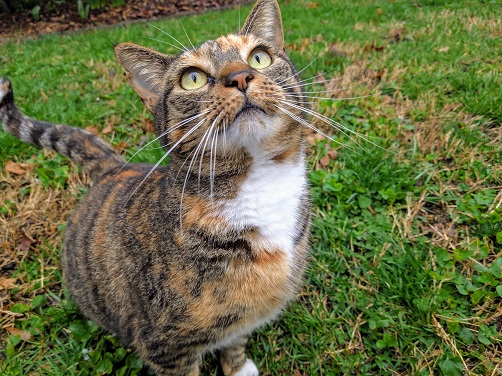
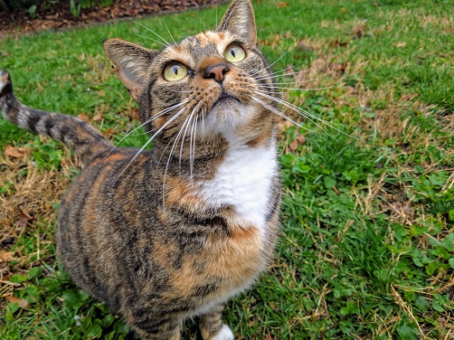

VIOLIN
 


-
BioViolin is a bright-colored tortoiseshell with thick fur and long eyebrow whiskers. She has one sister - Tulip.
-
PersonalityViolin is lazy and enjoys sleeping under azaelea bushes. Suprisingly she is adept at hunting chipmunks. Violin seems to be able to tell when I'm taking her picture because she likes to try and stare at the camera.